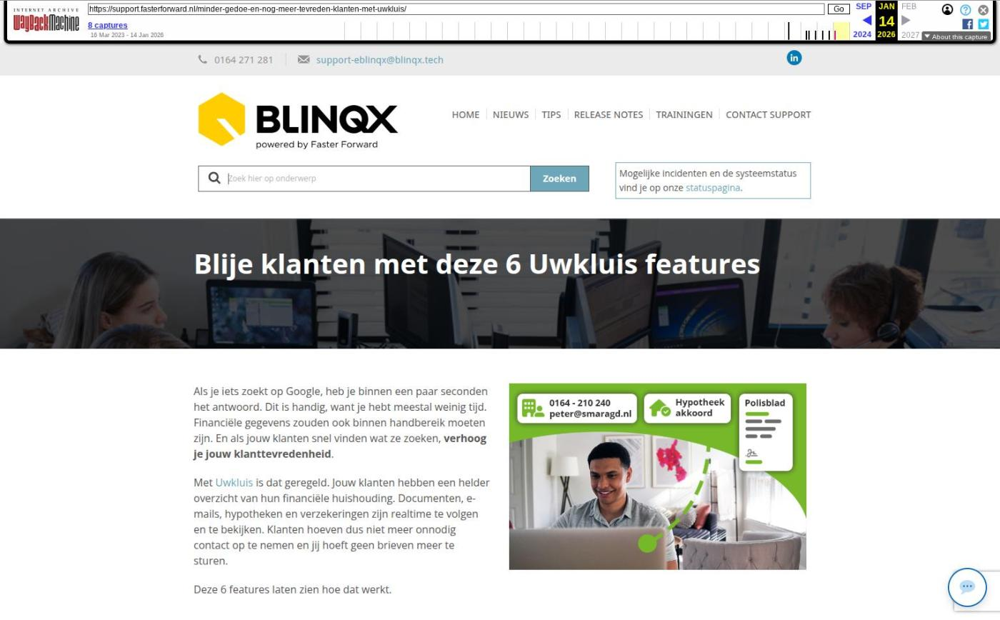

HDN release: afscheid van HDN certificaten

Tekstinhoud
Op maandag 1 december vindt de HDN release plaats. HDN neemt afscheid van de HDN certificaten voor adviseurs. In Elements en eBlinqx zijn er veel technische aanpassingen doorgevoerd, zodat de communicatie en het verkeer met HDN goed blijft verlopen.
Afscheid van HDN certificaten
Voor Elements/eBlinqx geen actie benodigd
HDN processen tijdelijk uitgezet
Overige verbeterpunten
Afscheid van HDN certificaten
HDN maakt het verlengen en beheren van de aansluiting met HDN eenvoudiger. Dit betekent dat zij afscheid nemen van de certificaten voor adviseurs. Als geldverstrekker of als intermediair verleng je straks jaarlijks je aansluiting op het HDN Platform via het HDN portaal. Om dit mogelijk te maken gaat er op 1 december een nieuwe versie van de API van het HDN Platform (versie 2.9.0) live.
Voor Elements/eBlinqx geen actie benodigd
Na de release is er geen actie benodigd binnen Elements/eBlinqx. Wij zorgen ervoor dat de aansluiting met HDN blijft werken. Hiervoor hoef je zelf niets te doen.
HDN processen tijdelijk uitgezet
Om de overgang goed te laten verlopen, moeten we de HDN processen tijdelijk uitzetten. Op zondag 30 november om 7.00 uur zetten we de processen uit. Maandagochtend 1 december, tussen 7.00 – 8.00 uur, zetten we de processen terug aan. Let op: in deze periode is er vanuit Elements/eBlinqx geen HDN-verkeer mogelijk. Er komen geen HDN berichten binnen en het is niet mogelijk om HDN berichten te versturen. Zodra de processen worden aangezet worden de binnenkomende en uitgaande berichten alsnog opgepakt en verwerkt.
Overige verbeterpunten
In de controlelijst in een ADN batch wordt nu in de mouse-over beter weergegeven of een maatschappij-incassopost is gecontroleerd. Is het vinkje blauw dan staat in de mouse-over 'Gecontroleerd', is het vinkje grijs dan staat in de mouse-over 'Nog te controleren'
Bij het ophalen van de gegevens via KvK worden nu de vernieuwde SBI codes opgehaald
Geplaatst op 25 november 2025
Laatste 5 releasenotes
Voorbereidingen op HDN 26 en verbeteringen PortefeuilleSignalen »
Nog meer data en documenten vergelijken »
Gemakkelijk data en documenten vergelijken »
Verbeteringen boekhouding en facturatie »
Verbeteringen gespreksopname en onder de motorkap »